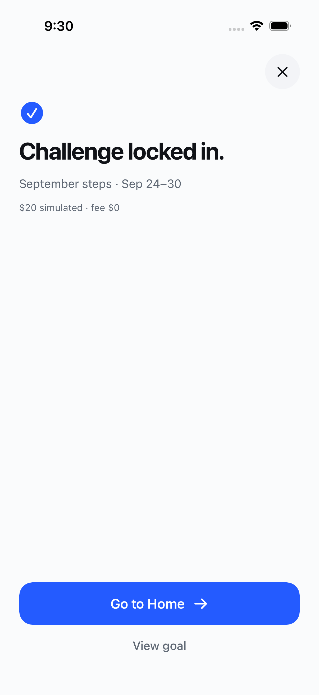

AFTER YOU CREATE A CHALLENGE
Locked in.
With a little more feeling.
One clear confirmation. Four different personalities. Same goal, dates and way home.
A My pick: the starting line.
Compare the pages. Open one to see it larger.
The direction I’d explore first: the starting line’s athletic composition, with the signal’s softer arrival. It gives this screen an identity while keeping the next action obvious.
PICK THE PARTS YOU LIKE
A direction, or a mix.
Choose any favorites and add a note. This queues design feedback for another mockup pass.
The screen today & what these concepts preserve

Give the empty middle a purpose.
The current page establishes success, but the icon and copy occupy only a small area at the top. These concepts use composition, a single graphic and a brief arrival to make the saved state feel intentional.
- The same “Challenge locked in.” headline.
- The goal name and saved dates, with the simulated amount secondary.
- “Go to Home” as the primary action, and “View goal” as the secondary.
- An always-available close button. Motion never delays an action.
All four use fictional September steps data from the reference. They confirm creation, not an athletic result. The calendar is an illustration of the existing date, not a new reminder or scheduling step.
Design source: GameTime’s adopted September 22 cool athletic light palette and native system typography. Reference: ChallengeCreationSuccess.swift, SignalCreationTheme.swift and docs/COPY.md. These are proposals; the app and its accepted behavior are unchanged.